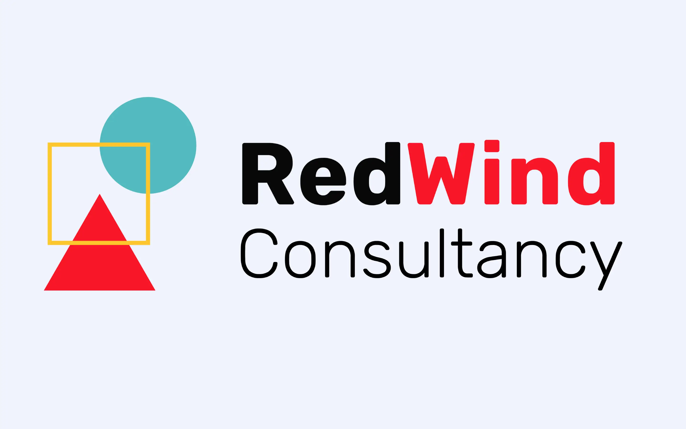
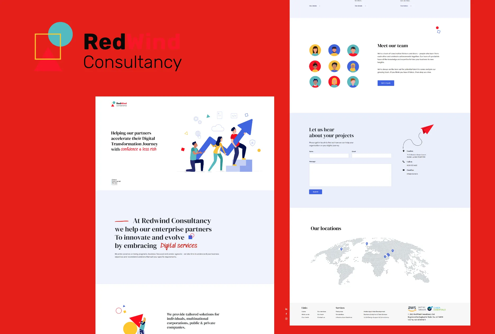
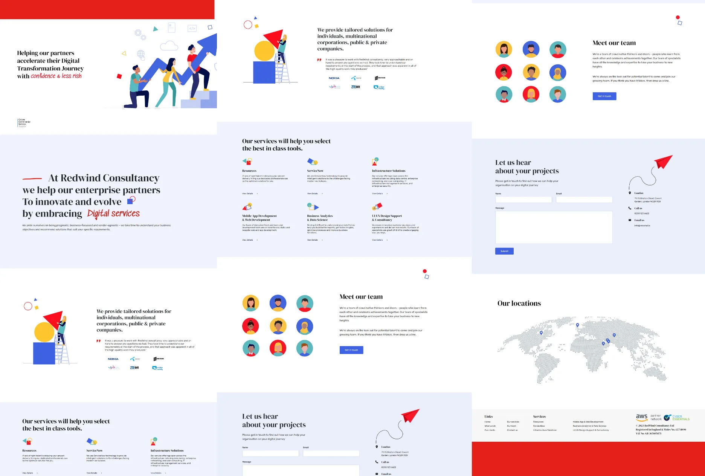

❋ 02 - 04
/21Redwind


/ The Website
Adding a splash of personality
The website was designed to be clean, professional and attractive. It features seamless design, animations and a clean look that will help the client increase conversions, display their portfolio and look more professional in the process.

Next Project →Colda